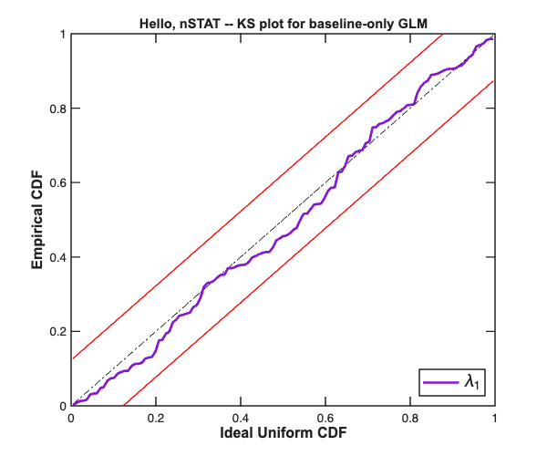

Hello, nSTAT
This is the minimum workflow for fitting a point-process GLM to a spike train in nSTAT: 8 classes, one synthetic dataset, finishing with a time-rescaling KS goodness-of-fit plot. Total runtime ~3 seconds. Open it in the Live Editor or run cell-by-cell.
What you'll learn:
- The 8 nSTAT classes you need to know (in dependency order). - How they compose into a Trial. - How Analysis.RunAnalysisForNeuron fits a GLM and returns a FitResult. - How to read the KS plot for goodness-of-fit.
What you won't learn here:
- The math behind the model -- see the references at the bottom of this file and the 2012 nSTAT paper. - Decoding (PPAF / PPHF / PPLFP) -- see helpfiles/DecodingExample.m. - State-space GLM for trial-drifting coefficients -- see helpfiles/SSGLMExample.m.
Contents
Step 1 -- simulate a spike train
In real use, replace this with your loaded spike times. We simulate a homogeneous Poisson process at 12 Hz for 10 seconds (a reasonable cortical-neuron firing rate).
rng(0, 'twister'); % reproducibility T = 10.0; % seconds sampleRate = 1000; % Hz (1 ms bins) delta = 1/sampleRate; trueRateHz = 12.0; t = (0:delta:T-delta)'; % nBins x 1 time vector y = double(rand(numel(t),1) < trueRateHz*delta); spikeTimes = t(y==1); fprintf('Simulated %d spikes (target rate %.1f Hz)\n',... numel(spikeTimes), trueRateHz);
Simulated 124 spikes (target rate 12.0 Hz)
Step 2 -- wrap as nspikeTrain
nspikeTrain(spikeTimes, name, binwidth, minTime, maxTime) is the basic point-process container. The binwidth discretizes the process for filter and likelihood evaluation; we use 1 ms.
nst = nspikeTrain(spikeTimes, 'unit1', delta, 0, T);
Step 3 -- gather into nstColl
nstColl holds a collection of spike trains (one or more). nSTAT's Analysis methods iterate over collections; even a single-neuron workflow uses this wrapper.
spikeColl = nstColl(nst);
Step 4 -- build covariates
Covariates are time-aligned predictors. The intercept-only baseline is mandatory: nSTAT's GLM does NOT add an implicit intercept; you must provide one.
baseline = Covariate(t, ones(numel(t),1), 'Baseline',... 'time','s','',{'const'}); covColl = CovColl({baseline});
Step 5 -- assemble the Trial
A Trial is the central experimental container: one spike-train collection + one covariate collection + (optional) events + (optional) history basis. Here we leave events and history empty for the minimal example.
trial = Trial(spikeColl, covColl);
Step 6 -- define a model configuration
A TrialConfig names which covariates the GLM uses. Multiple configurations can be wrapped in a ConfigColl for nested-model comparison via AIC/BIC; we use one here.
cfg = TrialConfig({{'Baseline','const'}}, sampleRate, []);
configColl = ConfigColl(cfg);
Step 7 -- fit the GLM
Analysis.RunAnalysisForNeuron(trial, neuronNumber, configColl, makePlot, algorithm, DTCorrection) fits a point-process GLM with the chosen covariates and returns a FitResult with the fitted intensity, coefficients, deviance, AIC/BIC, and time-rescaled spike times for goodness-of-fit.
fitResults = Analysis.RunAnalysisForNeuron(... trial, 1, configColl,... 0,... % makePlot = 0 (we'll plot separately) 'GLM',... % algorithm 1); % DTCorrection = 1 (Haslinger 2010) fprintf('\nFit complete:\n'); fprintf(' logLL = %.2f\n', fitResults.logLL); fprintf(' AIC = %.2f\n', fitResults.AIC); fprintf(' BIC = %.2f\n', fitResults.BIC); fprintf(' Fitted intercept coefficient: %.4f (true: log(%.3f) = %.4f)\n',... fitResults.b{1}(1), trueRateHz*delta, log(trueRateHz*delta));
Analyzing Configuration #1: Neuron #1 Fit complete: logLL = -667.61 AIC = 1090.76 BIC = 1097.97 Fitted intercept coefficient: -4.3902 (true: log(0.012) = -4.4228)
Step 8 -- KS plot for goodness-of-fit
The time-rescaling theorem (Brown et al. 2002) transforms the fitted intensity into a sequence of "rescaled" inter-spike intervals that should be Uniform(0,1) under the null hypothesis that the fitted intensity matches the true intensity. The KS plot compares the empirical CDF to the diagonal; deviations diagnose misspecification.
For our true-rate baseline-only model, we expect the KS plot to sit comfortably inside the 95% confidence band (the constant rate model IS correctly specified for homogeneous Poisson data).
figure('Position', [100 100 600 500]); fitResults.KSPlot; title('Hello, nSTAT -- KS plot for baseline-only GLM');

That's it
You now have:
- A fitted point-process GLM (fitResults). - A goodness-of-fit plot (the KS curve inside the 95% band). - The infrastructure to extend to multi-covariate models (add covariates to CovColl, name them in TrialConfig), history models (hist = History(windowTimes), pass to Trial), and multi-neuron ensemble fits (Analysis.RunAnalysisForAllNeurons).
Next reads:
- helpfiles/DecodingExample.m -- point-process adaptive filter (PPAF) decoding stimulus from spike trains. - helpfiles/PPSimExample.m -- simulating point processes with CIF. - examples/paper/example01_mepsc_poisson.m -- full reproduction of the 2012 paper's first analysis.
References:
- Cajigas, Malik, Brown 2012. J Neurosci Methods 211:245-264 (the nSTAT toolbox paper). - Brown, Barbieri, Ventura, Kass, Frank 2002. Neural Comput 14:325 (time-rescaling theorem).